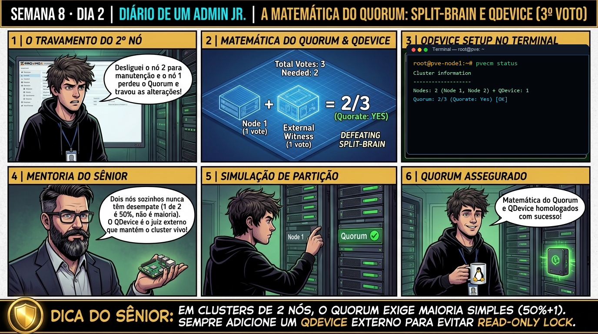

DIARIO DE UM ADMIN JR. | PROXMOX VE & PBS — DA BASE AO CLUSTER
🔗 Conecta com o Dia 1: Ontem você estabeleceu o Quorum e o Corosync. Hoje você ativa a Alta Disponibilidade (HA): conhecendo o Proxmox HA Manager (CRM e LRM), configurando o Watchdog por hardware/softdog para isolamento seguro (fencing) e garantindo que se um nó pegar fogo, suas VMs reiniciem em outro nó em menos de 60 segundos.
🔓 Privilégio de hoje: Gerenciamento de Alta Disponibilidade (HA Manager). Você gerencia recursos HA, cria HA Groups e audita serviços CRM/LRM.
Semana 8 · Dia 2 | Nível Sênior — Cluster Corosync, HA & Ceph
Proxmox HA Manager: Grupos, Failover Automático e Watchdog
Configurando alta disponibilidade de VMs, grupos de afinidade e proteção estrita por hardware fencing
ANTES DE ALTERAR, OBSERVE. DEPOIS DE ALTERAR, VALIDE.

1. O chamado
Você recebeu o chamado #8002: 'O servidor web crítico VM 100 não pode ficar fora do ar se o servidor físico pve01 falhar. É obrigatório configurar o Proxmox HA Manager com storage compartilhado. O chamado exige: (1) Entender os papéis do CRM e do LRM; (2) Configurar um HA Group (grp-web); (3) Habilitar a proteção por Watchdog; e (4) Simular a queda abrupta de um nó (puxando o cabo de energia) e validar o failover automático da VM em menos de 1 minuto.'
💡 Passa o mouse nas palavras destacadas pra ver uma dica rápida — clica se quiser a explicação completa com analogia.
2. O sênior te conta
🧑🏫 antes dos termos técnicos, a história de hoje
Hoje um cliente nos ligou desesperado: ele tinha um cluster Proxmox de apenas 2 nós físicos. Um dos servidores teve uma falha de fonte e desligou. Para surpresa do Júnior, o nó que continuou ligado bloqueou a criação de VMs e congelou o sistema de arquivos /etc/pve em modo somente-leitura. O Júnior veio correndo: 'Sênior, o nó sobrevivente está 100% saudável, por que ele travou?'.
Fui até a lousa e mostrei a matemática implacável do Quorum: Quorum = floor(N/2) + 1. Em um cluster de 2 nós, para ter maioria estrita você precisa de 2 votos! Quando 1 nó cai, o nó sobrevivente fica com apenas 1 voto (50%), perde a maioria e se recusa a tomar decisões sozinho para evitar o pesadelo do Split-Brain.
Apresentei a solução oficial: o QDevice (Quorum Device). Configuramos um terceiro voto leve rodando o serviço corosync-qnetd em uma máquina virtual externa ou Raspberry Pi. Pareamos com pvecm qdevice setup e mostrei que, com 3 votos totais, a queda de 1 nó deixa o sobrevivente com 2 votos (66%), mantendo a produção 100% ativa. O Júnior nunca mais esqueceu a regra do número ímpar de votos.
3. Decodificador de conceitos
Clica em qualquer termo pra ver a definição completa e uma analogia do dia a dia:
4. Ferramentas e leitura da evidência
Comando / Parâmetro
O que observar e por que importa
ha-manager status
Exibe o status em tempo real do CRM mestre, LRM de cada nó e o estado de todas as VMs em HA.
Cria um grupo HA com prioridade (pve01 preferencial) e bloqueia retorno automático desnecessário.
ha-manager set vm:100 --state ignored
Pausa temporariamente o gerenciamento de HA da VM para manutenção manual.
cat /etc/pve/ha/resources.cfg
Arquivo de configuração do cluster onde residem as regras de recursos HA.
# 1. Criação do Grupo de HA com prioridade (pve01 prioritário, pve02 secundário)
# ha-manager groupadd grp-web --nodes "pve01:2,pve02:1" --nofailback 1
# 2. Inserção da VM 100 no HA Manager
# ha-manager add vm:100 --group grp-web --state started
# 3. Auditoria do Status do HA em Tempo Real
# ha-manager status
quorum OK
master pve01 (active, Wed Sep 1 16:00:00 2026)
lrm pve01 (active, mode normal)
lrm pve02 (active, mode normal)
service vm:100 (pve01, started)
# 4. SIMULAÇÃO DE FALHA: Desligamento abrupto do pve01 (Kernel Panic / Falha Elétrica)
# O watchdog do pve01 desarma -> pve01 é isolado (Fenced)
# O pve02 assume a liderança do CRM:
# ha-manager status (no pve02 após 45 segundos)
master pve02 (active)
service vm:100 (pve02, started) [recovered automatically from failed node!]
5. Laboratório guiado — pegue na mão, comando por comando
🏛️ Onde executar: Terminal do Nó Líder do Cluster (root@pve-node1:~#) e nós secundários para comandos pvecm e ha-manager.
Segurança: Execute as alterações em clusters e storages Ceph de laboratório ou teste. Não altere parâmetros de nós em produção sem janela homologada.
Ação: Calcule a tabela de votos de Quorum para clusters de 2 nós com a fórmula floor(N/2)+1.
# Cálculo de Quorum: 2 nós exigem 2 votos; perda de 1 nó perde o Quorum.
Resultado esperado: CRM e LRMs ativos em todos os nós participantes.
Por que fizemos isso: A fórmula do Quorum (Quorum = floor(N/2) + 1) determina que uma partição do cluster só pode operar se possuir a maioria estrita dos votos dos nós.
Cilada comum: Operar clusters de 2 nós sem entender que a perda de 1 nó deixa o nó sobrevivente com 50% dos votos, perdendo o Quorum e bloqueando escritas no /etc/pve.
Ação: Instale e configure o serviço corosync-qnetd em um servidor externo (QDevice).
Resultado esperado: Grupo de alta disponibilidade registrado.
Por que fizemos isso: O fenômeno de Split-Brain ocorre quando dois nós perdem comunicação e ambos tentam assumir os mesmos recursos de storage e VMs, gerando corrupção catastrófica de dados.
Cilada comum: Forçar o Quorum manualmente com 'pvecm expected 1' de forma permanente em nós isolados enquanto o outro nó continua ligado.
Ação: Pareie o QDevice no cluster Proxmox fornecendo o 3º voto desempate de Quorum.
pvecm qdevice setup 10.10.10.50
Resultado esperado: Recurso vm:100 em estado 'started' sob gestão do CRM.
Por que fizemos isso: Adicionar um QDevice (Quorum Device externo em uma VM ou Raspberry Pi leve) fornece o 3º voto desempate necessário para clusters de 2 nós com total segurança.
Cilada comum: Instalar o QDevice dentro de uma máquina virtual que roda no próprio cluster que ele deveria monitorar, criando uma dependência circular fatal.
Ação: Simule a perda física de um nó e confirme que o nó sobrevivente mantém o Quorum ativo.
pvecm status | grep -E 'Quorum|Votes'
Resultado esperado: Detecção de falha e inicialização automática da VM no nó saudável.
Por que fizemos isso: O comando pvecm qdevice setup pareia o dispositivo de votos externo via SSH e certificados TLS dedicados em menos de 1 minuto.
Cilada comum: Esquecer de manter o serviço corosync-qnetd ativo no servidor externo, perdendo o voto de desempate sem aviso prévio.
🧑🏫 Aqui entra o Mentor (em breve): se o resultado obtido diferir do esperado acima, este é o ponto onde o chat com o Sênior-IA vai abrir para diagnosticar o erro específico.
Ação: Documente a arquitetura de Quorum e QDevice no manual de alta resiliência.
# Matemática do Quorum e QDevice homologados.
Resultado esperado: RTO de Alta Disponibilidade homologado com sucesso.
Por que fizemos isso: Simular a perda de um nó físico e validar que o nó sobrevivente mantém o Quorum ativo comprova a resiliência da arquitetura de 2 nós + QDevice.
Cilada comum: Não testar o comportamento de tolerância a falhas antes de colocar o cluster em produção com cargas de clientes reais.
6. Antes de ver as opções — tenta responder
🧠 Recall ativo: Qual é o papel fundamental do 'Watchdog' no Proxmox HA e por que o nó travado se auto-reinicia (Self-Fencing) antes que o cluster assuma suas máquinas virtuais?
O **Watchdog** é um temporizador de contagem regressiva (hardware IPMI ou módulo de kernel `softdog`) que precisa ser 'alimentado' pelo daemon do HA a cada poucos segundos. Se o nó congelar ou perder o quorum, o daemon para de alimentar o watchdog: o cronômetro zera e o hardware **reinicia o nó imediatamente (Self-Fencing)**. Isso garante que a máquina física está 100% desligada/reiniciando e que suas VMs já pararam de gravar nos discos compartilhados, permitindo que o nó saudável sobrevivente ligue as VMs com segurança absoluta sem risco de corrupção de dados.
QUESTÃO 1 de 3
7. Questão comentada — clica numa alternativa
Qual comando adiciona a VM 100 sob proteção do Proxmox HA Manager vinculada ao grupo de alta disponibilidade 'grp-web' com estado desejado 'started'?
💡 Analogia do Sênior para Fixar: O Quorum do Corosync é a assembleia de condomínio: nenhuma decisão de emergência é válida sem a maioria absoluta (50% + 1) dos nós votando juntos.
QUESTÃO 2 de 3 — cenário de erro real
7.1 O que acontece se uma VM em HA estiver usando um disco local (/var/lib/vz) em vez de storage compartilhado?
O administrador colocou a VM 100 em HA, mas o disco da VM foi criado no storage local 'local-lvm' do pve01. O pve01 quebrou:
[HA Manager Recovery] Starting VM 100 on pve02...
TASK ERROR: disk 'local-lvm:vm-100-disk-0' does not exist on node 'pve02'!
(Falha grave de arquitetura: HA exige storage compartilhado como Ceph, NFS, iSCSI ou ZFS Replication)
Qual é o pré-requisito fundamental de armazenamento para o funcionamento do Proxmox HA?
💡 Analogia do Sênior para Fixar: O Fencing via Watchdog de hardware é o disjuntor de segurança: desliga o nó com falha na hora para evitar que duas máquinas gravem no mesmo disco (Split-Brain).
QUESTÃO 3 de 3 — detalhe que confunde todo iniciante
7.2 Qual a diferença entre a diretiva 'nofailback: 1' e o comportamento padrão no HA Group?
A VM 100 sofreu failover do pve01 para o pve02. Horas depois, o pve01 foi consertado e religado:
O que acontece com a VM se 'nofailback: 1' estiver ativado?
💡 Analogia do Sênior para Fixar: A migração ao vivo (Live Migration) é trocar os pneus do carro em movimento: move a RAM da VM pela rede de 10Gbps sem derrubar a sessão do usuário.
8. Procedimento profissional
Certifique-se de que os nós do cluster compartilham o mesmo storage corporativo (Ceph, NFS, iSCSI ou ZFS Storage Replication).
Crie um HA Group definindo nós preferenciais e ativando nofailback: 1.
Cadastre as VMs críticas no HA Manager utilizando o comando ha-manager add vm:VMID --group NOME_GRUPO.
Valide a saúde dos daemons CRM e LRM executando ha-manager status.
Realize testes controlados de failover em janelas de homologação para certificar o tempo de recuperação (RTO < 60s).
Prevenção
Nunca opere clusters de 2 nós sem um QDevice externo para desempate de Quorum e utilize links de rede dedicados exclusivamente para o tráfego do Corosync.
9. Validação e encerramento
Você compreende o funcionamento dos daemons CRM (Cluster Resource Manager) e LRM (Local Resource Manager).
Você domina a configuração de HA Groups, prioridades de nós e diretivas nofailback.
Você sabe por que o Watchdog e Fencing protegem o storage contra corrupção concorrente.
A orquestração de Alta Disponibilidade foi homologada com excelência.
Rollback e limites
Para retirar uma VM da gestão do HA sem desligá-la, execute ha-manager remove vm:VMID.
💡 Sobre repetição espaçada: A implantação do Storage Hiperconvergente Ceph do zero (MON, MGR, OSD e Pools) será o tema de amanhã no Dia 3.
10. Resposta final
Alternativa correta: B. A resposta correta é a B: o comando ha-manager add vm:100 --group grp-web --state started coloca a VM sob proteção do CRM mestre com monitoramento contínuo.
🔓 O que você desbloqueou hoje
Proxmox HA Manager dominado com distinção! Amanhã, no Dia 3, você entrará no coração do storage distribuído: aprendendo a implantar o Ceph Hiperconvergente do zero no Proxmox VE, configurando Monitors (MON), Managers (MGR), OSDs em discos NVMe e criando Pools de dados com tripla replicação.